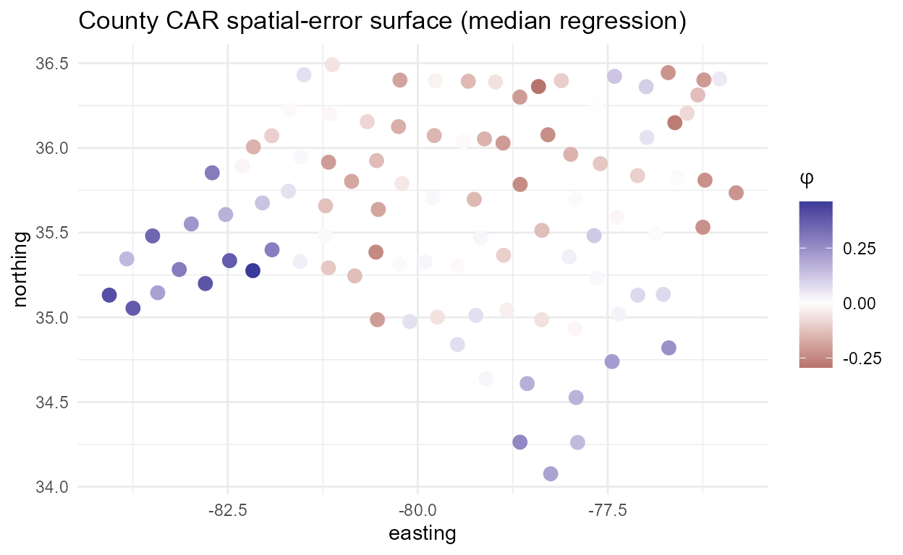

Spatial CAR-error quantile regression (areal and point data)
Source:vignettes/articles/spmixqr-spatial-error.Rmd
spmixqr-spatial-error.RmdWhat the CAR spatial-error term adds
spmixqr v0.1.0 modelled spatial structure through an
mgcv basis on the gate and slope
surfaces. Version 0.2.0 adds a weights-matrix-driven
alternative: each regime carries a per-unit
conditional-autoregressive (CAR) spatial random effect
phi_k, a mean-zero spatial-level surface with a Leroux
proper precision
which recovers the intrinsic CAR (ICAR/Besag) at
and independence at
(Leroux, Lei, and Breslow 2000). The
asymmetric-Laplace working likelihood of the quantile components makes a
Gaussian CAR effect the right penalty for the M-step (Kozumi and Kobayashi 2011). We solve the
penalised check loss directly, so
is a tuning parameter chosen by BIC. With G = 1 this is a
single-population spatial-error quantile regression; with
G > 1 it is a mixture of spatial quantile
regressions.
Identification. A free spatial gate aliases with the
CAR intercept surface, so spatial_error = TRUE turns the
spatial gate off by default, and an explicit
spatial_gate = TRUE then raises a guardrail error. A
per-connected-component sum-to-zero constraint on
phi_k is absorbed into the incidence and precision (as
mgcv’s mrf basis does via absorb.cons), so the
intercept carries the level and the CAR surface is a mean-zero
deviation. alpha is fixed (default 0.95)
and disclosed as weakly identified; the check loss does not select it
(verified degenerate).
Building the weights matrix
spq_weights() constructs a symmetric, sparse
W from polygons (queen or rook contiguity), point
coordinates (distance band or k-nearest-neighbour, symmetrised), an
spdep nb/listw, or a
user-supplied matrix. The default style = "B" (symmetric
binary) is required for a valid Gaussian Markov random field
precision.
data(nc_sids_W)
W <- spq_weights(nc_sids_W, type = "supplied")
W
#> <spq_weights>
#> type = supplied style = B
#> units L = 100 nonzero links = 490 connected components = 1A census-tract areal example: North Carolina SIDS
The shipped nc_sids data are sudden-infant-death counts
for the 100 North Carolina counties (1974–78), the canonical
areal/lattice dataset (Cressie 1993). We
model the log SIDS rate against the proportion of non-white births, with
a county-level CAR spatial-error surface.
data(nc_sids)
fit <- spmixqr(log_sids ~ pnw, nc_sids, coords = nc_sids$county,
G = 1, tau = 0.5, spatial_error = TRUE, spatial_coef = FALSE,
spatial_W = W, variance = "none",
control = spmixqr_control(nstart = 1L, seed = 1))
#> spatial_error = TRUE: turning the spatial gate off (the free spatial gate aliases with the CAR intercept surface). Set gating = ~z for a covariate gate.
coef(fit)
#> regime1
#> (Intercept) 0.1215836
#> pnw 1.9310562The fitted CAR surface is a tidy data frame for mapping:
ph <- phi_surface(fit)
head(ph)
#> unit regime phi
#> 1 Ashe 1 0.0669596899
#> 2 Alleghany 1 -0.0556151452
#> 3 Surry 1 -0.0009450982
#> 4 Currituck 1 0.0469209501
#> 5 Northampton 1 0.1244467071
#> 6 Hertford 1 0.1058073669
library(ggplot2)
ph$east <- nc_sids$east[match(ph$unit, nc_sids$county)]
ph$north <- nc_sids$north[match(ph$unit, nc_sids$county)]
ggplot(ph, aes(east, north, colour = phi)) +
geom_point(size = 3) +
scale_colour_gradient2() +
labs(title = "County CAR spatial-error surface (median regression)",
x = "easting", y = "northing", colour = expression(phi)) +
theme_minimal()
Residual spatial autocorrelation (a negative control)
moran_resid() runs a permutation Moran’s I on the
responsibility-weighted residual aggregated to the unit, before and
after the CAR term. The nc_sids log-rate residuals carry
little spatial signal to begin with: the before-CAR
Moran’s I is small and non-significant. This is a negative control
rather than a power demonstration. With nothing for the CAR term to
absorb, BIC drives lambda_phi toward a near-flat
surface.
moran_resid(fit, nsim = 199)
#> Permutation Moran's I (responsibility-weighted unit residuals)
#> before CAR: I = 0.0355 p = 0.5250 (units = 100)
#> after CAR: I = -0.1180 p = 0.0250 (units = 100)The before-significant to after-non-significant story appears below, on a simulated DGP that does carry genuine residual autocorrelation.
A point example: meuse zinc
For point data, spq_weights() builds the graph from
coordinates (here a symmetrised k-nearest-neighbour graph). Each
distinct location is its own unit.
data(meuse_zinc)
cc <- as.matrix(meuse_zinc[, c("x", "y")])
Wp <- spq_weights(cc, type = "knn", k = 6)
fit_p <- spmixqr(log(zinc) ~ dist, meuse_zinc, coords = cc, G = 1, tau = 0.5,
spatial_error = TRUE, spatial_coef = FALSE, spatial_W = Wp,
variance = "boot",
control = spmixqr_control(nstart = 1L, seed = 1, boot_B = 50L))
#> spatial_error = TRUE: turning the spatial gate off (the free spatial gate aliases with the CAR intercept surface). Set gating = ~z for a covariate gate.
coef(fit_p)
#> regime1
#> (Intercept) 6.605392
#> dist -2.945614Because the outcome is log(zinc), the spatial effect is
most interpretable on the multiplicative scale:
phi_surface(scale = "exp") reports exp(phi),
the factor by which zinc runs above or below what distance-to-river
predicts. With ci = TRUE we keep only the locations where
that factor is reliably away from 1.
pm <- phi_surface(fit_p, ci = TRUE, scale = "exp")
range(round(pm$mult, 2)) # e.g. 1.18 = ~18% above expected
#> [1] 0.75 1.38
sprintf("%d of %d sites are credible (zinc reliably above/below expectation)",
sum(pm$credible), nrow(pm))
#> [1] "56 of 155 sites are credible (zinc reliably above/below expectation)"NNGP: a weights-matrix-free spatial error for point data
For point data, a contiguity/k-NN W is an ad hoc
discretisation of a continuous surface. A nearest-neighbour
Gaussian process (NNGP; Datta, Banerjee, Finley & Gelfand
2016) instead places a continuous Matern field on the points and
represents it by a sparse precision
Q = (I - B)' D^{-1} (I - B) built from each point’s
m nearest neighbours.
spq_weights(type = "nngp") returns that precision; it plugs
into the same penalised spatial-error M-step as the CAR term — but it is
W-free, scalable (the precision is sparse), and
continuous-domain. Because the precision is proper (full rank),
phi is fit unconstrained (no sum-to-zero).
cc <- as.matrix(meuse_zinc[, c("x", "y")])
Wn <- spq_weights(cc, type = "nngp", m = 10, nu = 0.5) # 10-neighbour exponential field
Wn
#> <spq_weights>
#> type = nngp (NNGP Matern precision) nu = 0.5 range = 444.1
#> units L = 155 neighbours m = 10 precision nnz = 4387
fit_n <- spmixqr(log(zinc) ~ dist, meuse_zinc, coords = cc, G = 1, tau = 0.5,
spatial_error = TRUE, spatial_coef = FALSE, spatial_W = Wn,
variance = "none", control = spmixqr_control(nstart = 1L, seed = 1))
#> spatial_error = TRUE: turning the spatial gate off (the free spatial gate aliases with the CAR intercept surface). Set gating = ~z for a covariate gate.
coef(fit_n)
#> regime1
#> (Intercept) 6.677665
#> dist -2.897008The Matern range and smoothness nu are
weakly identified from one realisation (Zhang 2004), so they are fixed
(or chosen by BIC over a few spq_weights(range = ...)
objects), exactly as the roughness penalty is. For point GPs use
variance = "boot": the classification-conditional sandwich
forms a dense per-unit covariance.
Spatial+: guarding against spatial confounding
Adding any spatial random effect — CAR or NNGP — can bias the covariate effects when a covariate itself varies smoothly over space: the spatial term and the covariate compete for the same variation, attenuating (or even flipping) the slope (Hodges & Reich 2010). The sound remedy is Spatial+ (Dupont, Wood & Augustin 2022): residualise each covariate against a spatial smooth and fit on the residuals, so the covariate keeps only its non-spatial variation. It is loss-agnostic, so it composes with the quantile EM. (We do not offer restricted spatial regression, which the recent literature has refuted as a general fix.)
sim_spatial_confound() makes the problem concrete: a
covariate x confounded with a spatial field that also
drives y, with a known true slope of 1.
d <- sim_spatial_confound(n = 400, beta = 1.0, confound = 0.9, seed = 11)
Wn2 <- spq_weights(d$coords, type = "nngp", m = 10)
ctl <- spmixqr_control(nstart = 1L, seed = 1)
b <- function(f) round(coef(f)["x", 1], 3)
f_naive <- spmixqr(y ~ x, d$data, coords = d$coords, G = 1, tau = 0.5,
spatial_error = FALSE, spatial_coef = FALSE, variance = "none", control = ctl)
f_nngp <- spmixqr(y ~ x, d$data, coords = d$coords, G = 1, tau = 0.5, spatial_error = TRUE,
spatial_coef = FALSE, spatial_W = Wn2, variance = "none", control = ctl)
#> spatial_error = TRUE: turning the spatial gate off (the free spatial gate aliases with the CAR intercept surface). Set gating = ~z for a covariate gate.
f_splus <- spmixqr(y ~ x, d$data, coords = d$coords, G = 1, tau = 0.5, spatial_error = TRUE,
spatial_coef = FALSE, spatial_W = Wn2, spatial_plus = TRUE,
variance = "none", control = ctl)
#> spatial_error = TRUE: turning the spatial gate off (the free spatial gate aliases with the CAR intercept surface). Set gating = ~z for a covariate gate.
c(truth = 1, naive = b(f_naive), nngp_only = b(f_nngp), spatial_plus = b(f_splus))
#> truth naive nngp_only spatial_plus
#> 1.000 1.979 1.258 1.087The naive slope is badly inflated; the NNGP term absorbs part of the
confounding but, being penalised, leaves a residual bias;
Spatial+ removes most of what remains. The catch
(Frisch–Waugh–Lovell): Spatial+ deconfounds only to the extent its
residualisation smooth out-resolves the penalised spatial term
— residualising on the very same basis is a no-op. The residualisation
is mean-based, so it cleanly deconfounds the quantile slope for
symmetric error; the reported slopes are the effect of the non-spatial
part of each covariate (see summary(f_splus)).
Identification under the check loss (why mean-based residualisation works)
Spatial+ was derived for least-squares (mean) regression, so does a
mean-based residualisation deconfound the quantile
slope? Yes — and at every quantile at once. Under an additive model
y = m(s) + beta_x x + eps with an exogenous error
eps and x = E[x | s] + e, removing
E[x | s] makes the conditional quantile affine in the
residual with slope beta_x for every
tau: Q_tau(y | r, s) = beta_x r + h_tau(s),
where h_tau(s) is absorbed by the retained spatial term.
The key point is that deconfounding is a conditional-orthogonality
property — it does not depend on tau — so a single
least-squares residualisation works across the whole distribution; there
is no need to residualise separately per quantile. (A full proof and its
boundary cases are in the package’s methodological notes.) The recovery
holds in the tails, not just at the median:
taus <- c(0.1, 0.5, 0.9)
rbind_tau <- function(tau) {
fn <- spmixqr(y ~ x, d$data, coords = d$coords, G = 1, tau = tau, spatial_error = FALSE,
spatial_coef = FALSE, variance = "none", control = ctl)
fp <- spmixqr(y ~ x, d$data, coords = d$coords, G = 1, tau = tau, spatial_error = TRUE,
spatial_coef = FALSE, spatial_W = Wn2, spatial_plus = TRUE,
variance = "none", control = ctl)
c(tau = tau, naive = b(fn), spatial_plus = b(fp))
}
round(do.call(rbind, lapply(taus, rbind_tau)), 3) # true slope = 1 at every tau
#> spatial_error = TRUE: turning the spatial gate off (the free spatial gate aliases with the CAR intercept surface). Set gating = ~z for a covariate gate.
#> spatial_error = TRUE: turning the spatial gate off (the free spatial gate aliases with the CAR intercept surface). Set gating = ~z for a covariate gate.
#> spatial_error = TRUE: turning the spatial gate off (the free spatial gate aliases with the CAR intercept surface). Set gating = ~z for a covariate gate.
#> tau naive spatial_plus
#> [1,] 0.1 1.921 1.195
#> [2,] 0.5 1.979 1.087
#> [3,] 0.9 1.889 1.072The two practical conditions are that the covariate enters additively (so a single slope exists) and that the residualisation smooth, together with the spatial term, out-resolves the covariate’s spatial mean (the Frisch–Waugh–Lovell gap above).
Recovery on a known DGP
sim_spmixqr(spatial_error = TRUE) generates lattice data
with a known CAR effect, so we can check recovery directly.
d <- sim_spmixqr(n = 500, G = 1, tau = 0.5, spatial_error = TRUE,
lattice = 7, car_rho = 1.5, seed = 7)
f <- spmixqr(y ~ x, d$data, coords = d$region, G = 1, tau = 0.5,
spatial_error = TRUE, spatial_coef = FALSE, spatial_W = d$spatial_W,
variance = "none", control = spmixqr_control(nstart = 1L, seed = 1))
#> spatial_error = TRUE: turning the spatial gate off (the free spatial gate aliases with the CAR intercept surface). Set gating = ~z for a covariate gate.
cor(f$car$phi[, 1], d$truth$phi[, 1]) # phi recovery
#> [1] 0.956747
sum(f$car$phi[, 1]) # mean-zero constraint (exact)
#> [1] -1.313533e-14The CAR term absorbs genuine residual autocorrelation
Here the unobserved CAR surface induces real spatial autocorrelation
in the residuals, so moran_resid() shows the intended power
story: Moran’s I is large and significant before the CAR term
and drops to non-significance after it.
moran_resid(f, nsim = 199)
#> Permutation Moran's I (responsibility-weighted unit residuals)
#> before CAR: I = 0.5026 p = 0.0050 (units = 49)
#> after CAR: I = -0.0809 p = 0.4300 (units = 49)Inference and caveats
The asymmetric-Laplace working likelihood makes naive standard errors
optimistic. We recommend reporting the spatial-block
bootstrap, which for areal data resamples contiguous
connected-component blocks of W; an i.i.d. fallback would
destroy the spatial dependence. The bootstrap is the cost centre, so the
example below is a small smoke run.
## \donttest: refit x B is slow; use moderate L / few reps for the block bootstrap.
fit_b <- spmixqr(log_sids ~ pnw, nc_sids, coords = nc_sids$county, G = 1, tau = 0.5,
spatial_error = TRUE, spatial_coef = FALSE, spatial_W = W,
variance = "boot",
control = spmixqr_control(nstart = 1L, seed = 1, boot_B = 50L))
vcov(fit_b)$noteCaveats, all disclosed in summary(): alpha
is weakly identified (fixed, not estimated); lambda_phi is
a penalty, not a precise variance; the block bootstrap under-covers with
few blocks (Lahiri 2003); and the
spatial-lag
()
model is deferred (v1 models autocorrelated unobservables, not
spillovers).